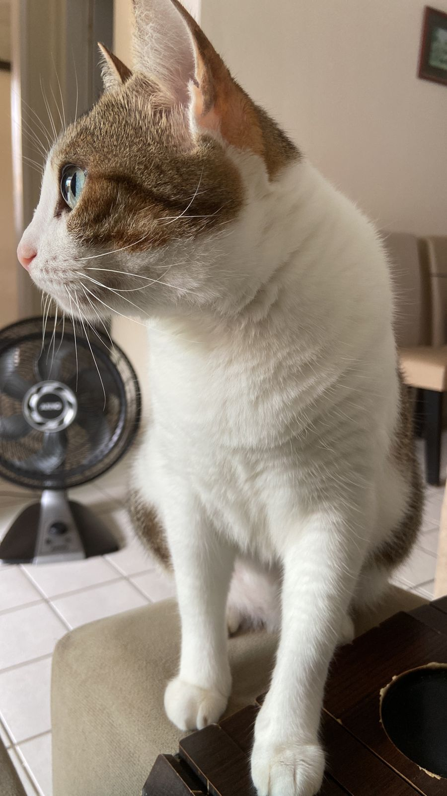
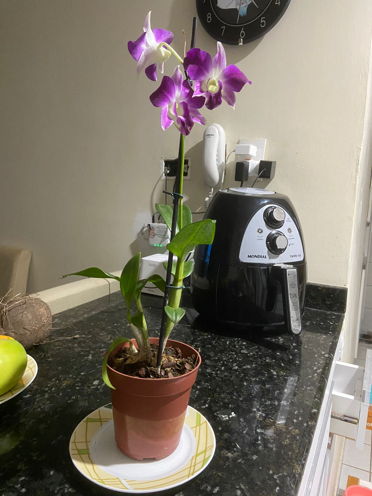
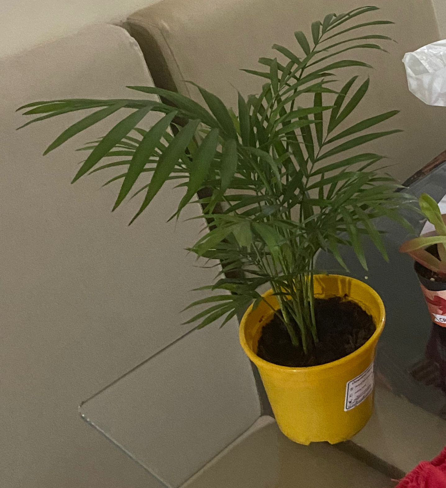
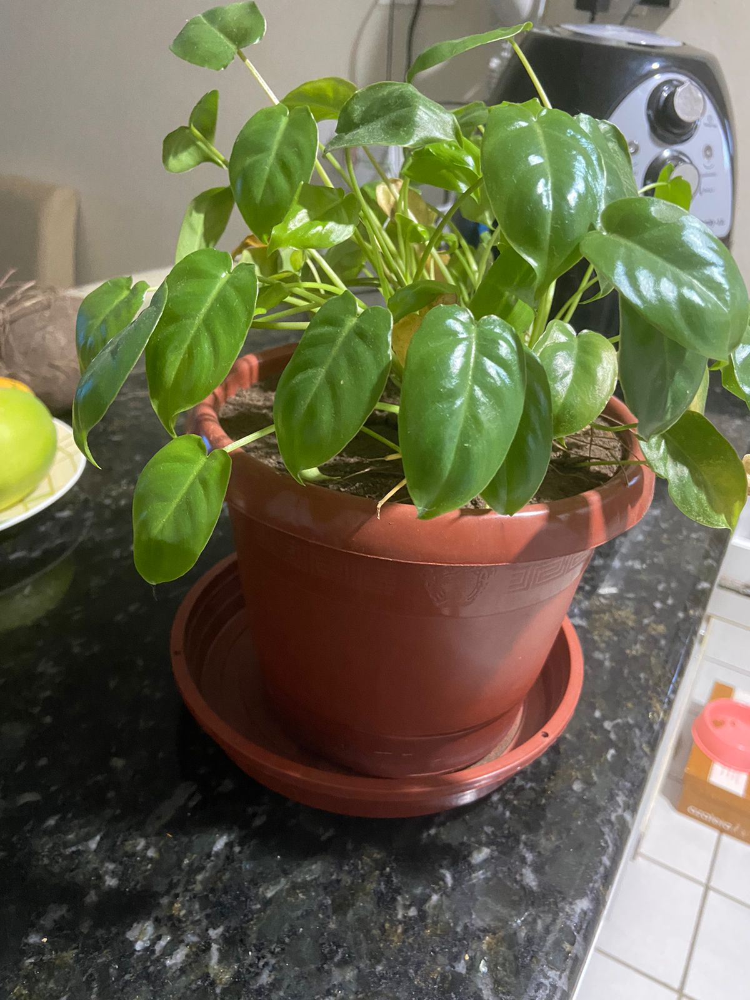

Oi, eu sou Amanda

INFORMAÇÕES BÁSICAS:
Nome: Amanda Quirino Rodrigues Dos Santos
Email: aqrs@cin.ufpe.br
Profissão: Estudante
Idade: 20 anos
Universidade: UFPE
Diplomas:
- Nenhum, atualmente no processo de conseguir um diploma em Ciências da Computação
Linguagens de programação aprendidas:
-C
-Aprendizado de Python em progresso
Interesses:
-Plantas
-Minha gata
-Programar
-Xingar o programa que fiz
Curiosidades:
- Curiosidade 1
- Tenho uma gata (Mimi) que só dorme e faz cara feia, uma fofa

- Curiosidade 2
-Tenho tres plantas, uma orquidea dendrobium nobile (que foi mais dificil do que eu previa descobrir o nome)

- Curiosidade 3
- Uma mini palmeira chameadora ( Uma fofa também)

- Curiosidade 4
- E essa planta que eu não lembro nome

- Curiosidade 5
-Ensinei Mimi a dar a pata em troca de folha